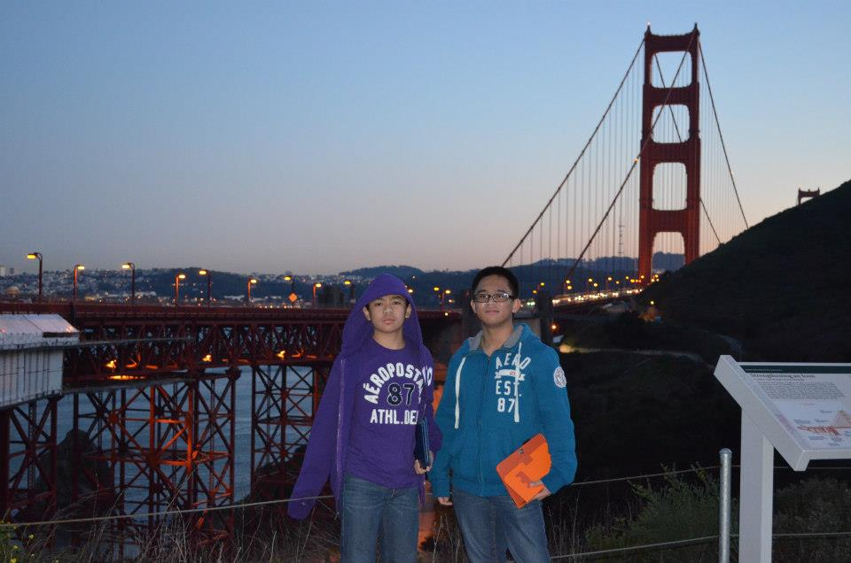
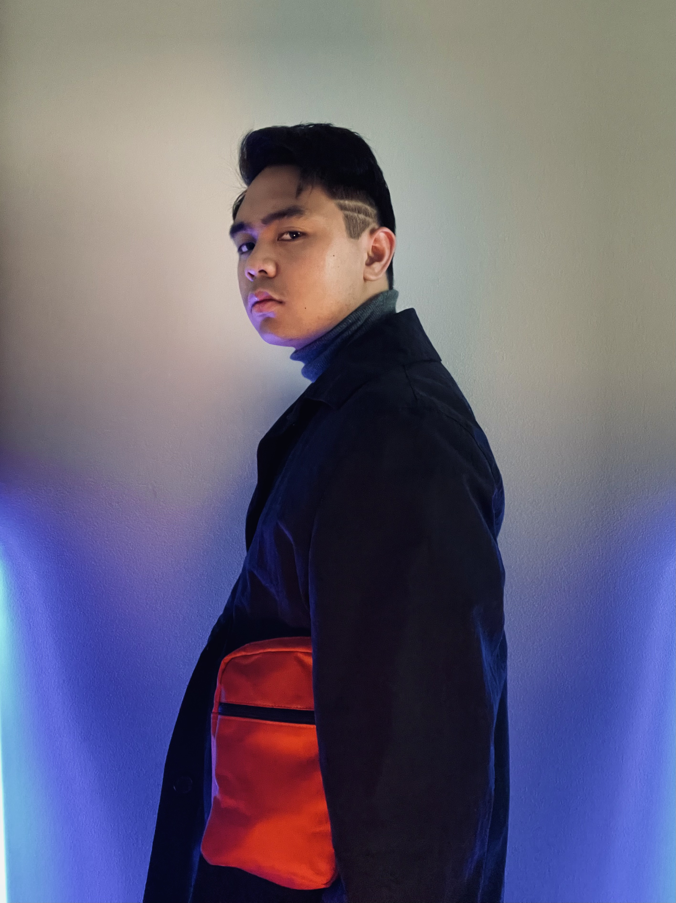
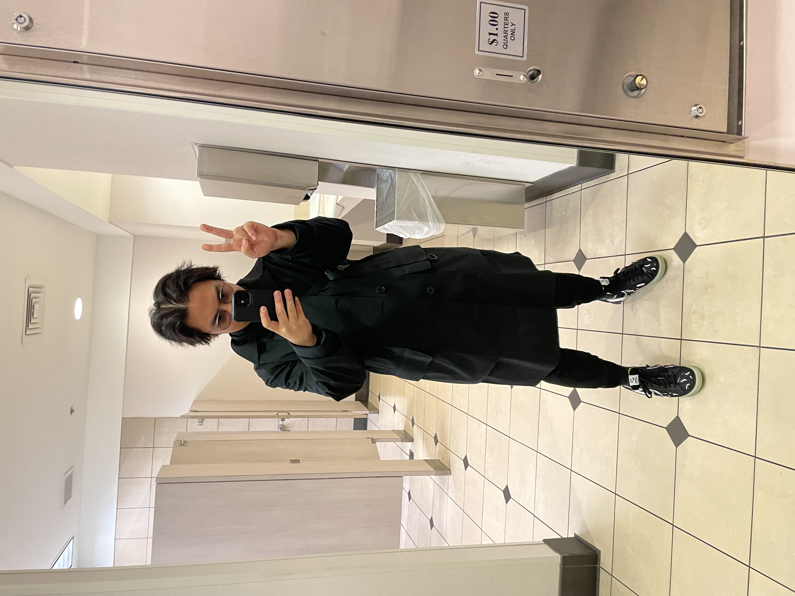
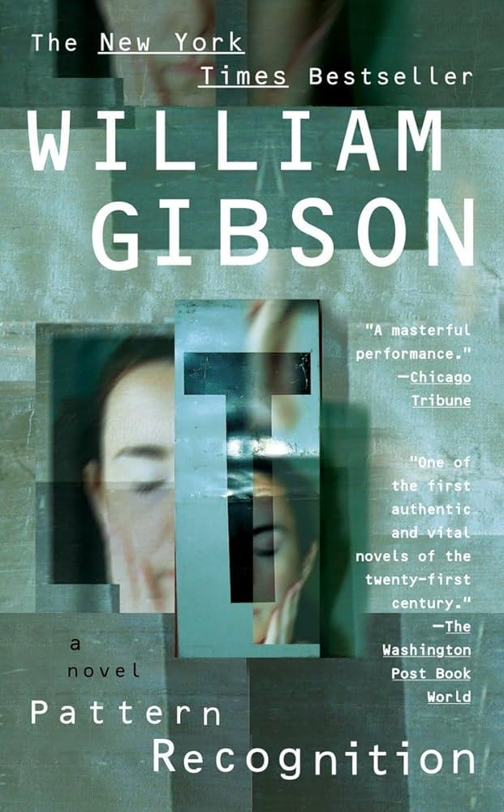

Introduction:

My name is Nathan Mayo (as in My-o) and I am a die-hard fan of photography involving the use of neon lights and futuristic themes. My love for science-fiction and fashion go back to when I was a child who was exposed to futuristic media and how much of an influence it held to my personal aesthetic. Though synthwave photography is starting to become more mainstream that it has, I still do believe that it is possibly the most underated form of media since it isn't too common here in the Pacific Northwest!
Early Life:
Born in Yokosuka, Japan in July 9, 2001. I was birthed at an American hospital since my father was stationed with the U.S. Navy, which we later moved to the United States where I was pretty much raised in over the duration of my life. In this picture, this is a photo of me and my older brother in San Francisco back in 2012!
My Interests outside of photography:
Outside of my interests in photoghraphy, I also teach writing (sort of) to students at my college. I am currently still a student who is also pursuing the goal of teaching english and writing. Other interests also include my hobbies in fashion and design as well as basing my wardrobe to science-fiction media!
This is just one of the few examples of my personal wardrobe, I probably have more images laying around that look a little more up-to-date than this!
Another look into my wardrobe, this time more up-to-date and more of a full body selfie. Yes, those are Nike Blazers I'm wearing, and if you're wondering which kind? They're the Acronym models that also have customizable heel clips!
Books I wish to read:
Do Androids Dream of Electric Sheep (aka, Blade Runner):

A science-fiction classic written by Philip K. Dick, which has also been adapted to two films of my favorite films: Blade Runner, directed by Ridley Scott and Blade Runner: 2049, directed Dennis Villeneuve. It's one of those cyberpunk books I really would love to pick up at some point to experience what the novel itself contains and how it became such an influential neo-noir classic in the coming decades!
Pattern Recognition:
Another cyberpunk novel I would really like to read. As a matter of fact I did go through a sample reading of the story and I am quite intrigued with how the story details the more coporate and current state of today's society and technological uses such as the internet. I also like the idea of the main character, Cayce Pollard being psychologically sensitive to corporate symbols.